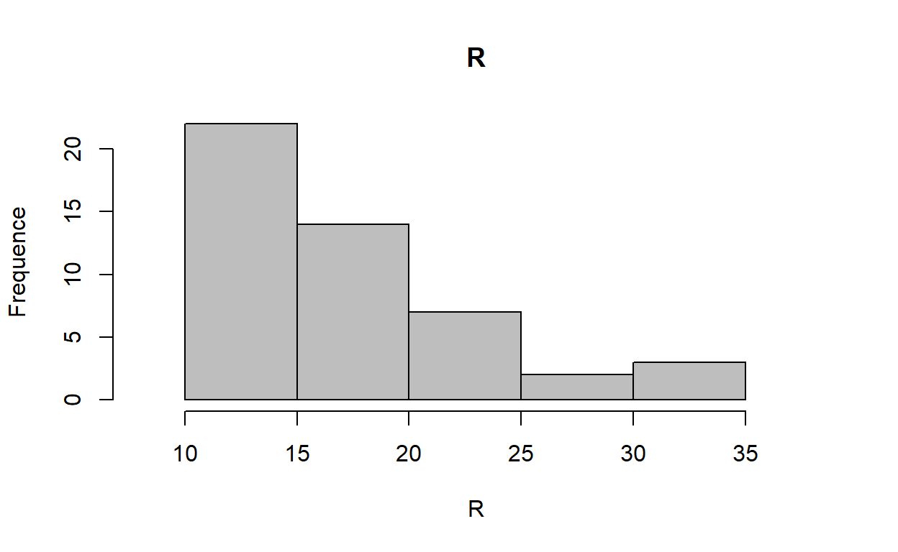
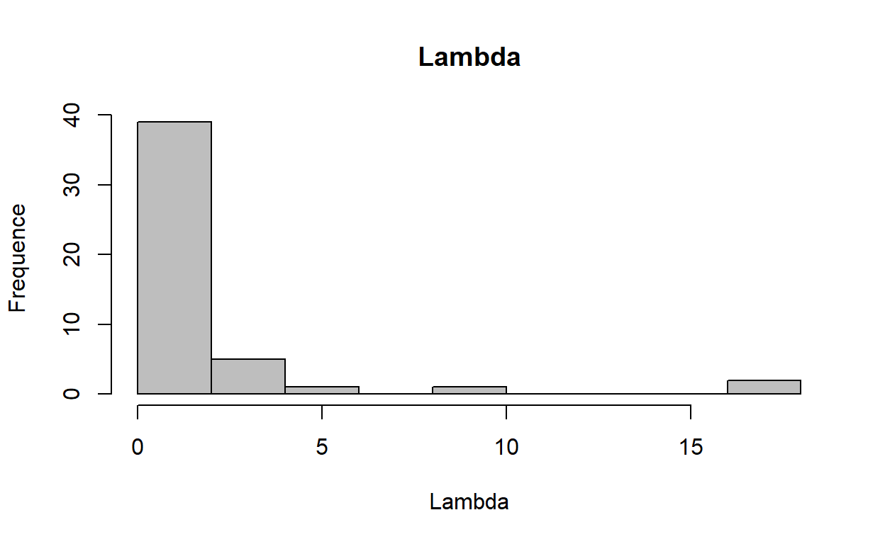
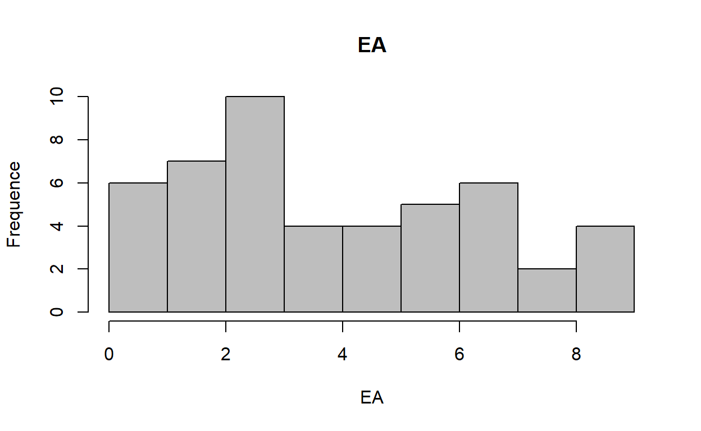
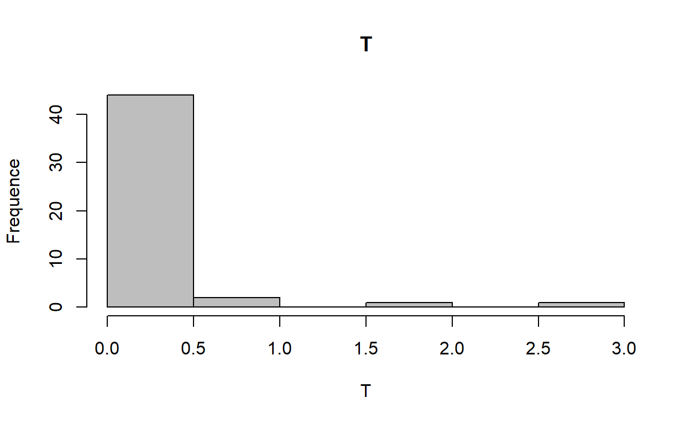

Le test de Rorschach est un test de personnalité projectif parfois utilisé pour évaluer le fonctionnement psychologique de personnes ayant commis des infractions pénales. Nous avons récolté 48 protocoles de Rorschach de détenus belges francophones admissibles à une libération conditionnelle. Les protocoles ont été cotés selon le Système Intégré. Nous nous sommes intéressés à quatre variables : R, L, EA et T. Nos résultats indiquent un nombre de réponses inférieur (R bas), un Lambda plus élevé (L > 1), des ressources inférieures (EA bas) et un nombre de réponses textures plus faible (T bas) par rapport aux normes internationales.
Depuis sa création il y a une centaine d’années, le Rorschach a évolué au fil des mouvements de pensées, des intuitions de chacun·e et, finalement, des travaux le concernant. De multiples méthodes ont ainsi pu émerger à partir des planches originelles d’Hermann Rorschach et, in fine, trois méthodes sont devenues centrales. La méthode « Symboliques Française », le « Système Intégré » et puis, en dernier lieu, le « R-PAS ». Le Rorschach n’a jamais cessé d’être au centre d’expériences, de controverses et de débats. Son utilisation est encore fréquente au sein de multiples institutions, notamment dans celles liées à l’évaluation psychologique. Cette étude se concentre sur la méthode en Système-Intégré (S.I).
Le test de Rorschach selon le S.I est, selon ses praticiens, un outil apportant une multitude d’éléments venant alimenter la réflexion clinique sur le sujet, permettant d’envisager le sujet de manière complexe et profonde. Cette épreuve hérite également de plusieurs dizaines d’années d’expérience venant renforcer son bagage empirique. L’attrait d’un test projectif de la sorte résulte aussi de son aspect qualitatif. Comme l’écrit Exner (2003a) :
Bien peu, sinon aucune procédure d’évaluation, ne peut capturer l’originalité d’une personne comme peut le faire le Rorschach s’il est utilisé de manière appropriée (p.8).
Il est vrai que l’apprentissage du Rorschach selon la méthode intégrée d’Exner est complexe et nécessite une rigueur, de l’exercice ainsi que de l’expérience. Ainsi, une bonne formation couplée à de l’expérience seront les préalables nécessaires à une interprétation adéquate.
Dans le Système-Intégré, le sujet est confronté aux dix planches originales d’Hermann Rorschach. Lors de la présentation des planches, la question « Qu’est-ce que cela pourrait-être ? » lui est alors posée. Le sujet fournit alors des réponses qui, dans un deuxième temps, seront explorées par l’examinateur en vue de comprendre précisément la perception du sujet. Ensuite, chacune des réponses est ensuite cotée selon diverses caractéristiques :
Une fois toutes les réponses cotées, une multitude d’indices sont calculés, formant ultimement le résumé formel, synthèse récapitulative et pièce maîtresse de l’interprétation.
Lors de cette étude, bien que chacune des variables du résumé formel pourrait être étudiée et comparée, nous allons nous pencher sur une sélection de variables potentiellement liées aux singularités du contexte d’expertise intra carcéral. A savoir : Le nombre total de réponses (R), la propension à donner des réponses strictement formelles (Lambda), l’indice de ressources disponibles (EA), et les réponses Textures (T).
Le nombre total de réponses (R) correspond simplement à la somme des réponses produites lors de la passation au test. Selon le S.I, un protocole n’est jugé valide que si celui-ci comprend plus de quatorze réponses, un nombre qui peut parfois se révéler laborieux à atteindre lors d’une première passation dans un contexte d’expertise. Lorsque trop peu de réponses sont produites, il est possible pour le clinicien de réaliser une étape supplémentaire afin d’augmenter celui-ci. A l’inverse, dans certaines (rares) situations d’un sujet particulièrement loquace, des consignes sont prévues afin d’éviter de surcharger le protocole. Face à la question « Qu’est-ce que cela pourrait être ? » et aux dix planches proposées, une collaboration « minimale » est attendue du sujet participant à notre test afin d’atteindre le seuil. Généralement et quand elles ne sont pas expliquées autrement, les tentatives de refus de planche (aucune réponse proposée à l’un ou plusieurs de celles-ci) sont considérées comme signe d’un faible investissement. Le nombre de réponses est positivement associé à la capacité / tendance à répondre avec diverses idées. Il est négativement associé à la maladie d’Alzheimer, aux traumas crâniens et à l’échec à l’achèvement d’autres tests (Mihura et al., 2013). Cette variable aurait un support de validité jugé bon ( r ⩾ .21).
Le Lambda (L) correspond au rapport entre le nombre de réponses purement formelles avec les autres réponses. Il est interprété comme une notion d’économie dans l’utilisation des ressources. Ainsi, un Lambda élevé (L > 1) indiquerait un style évitant, c’est-à-dire d’une tendance à économiser et à éviter la complexité. En formulant majoritairement voire excessivement des réponses strictement formelles (par exemple : « C’est un papillon car ça en a la forme »), le sujet se montre plus prudent ou conservateur dans l’effort et le traitement de l’information. En effet, les réponses purement formelles sont probablement les plus simples à fournir pour un sujet. Comme susmentionnés, un excès de réponses formelles peut être interprété comme une attitude défensive (Exner, 2003a). En effet, donner une réponse que l’on perçoit uniquement par la caractéristique formelle d’une localisation ou de la planche relève d’un engagement qualifié d’économique (Exner, 2003a), à l’inverse de réponses plus complexes (Blends, mouvements, etc.). Finalement, le Lambda, indice clé et conditionnant la suite des interprétations, est associé négativement au niveau d’éducation ou au Quotiennt Intellectuel (WAIS) et, finalement, aux compétences jugées nécessaires pour suivre une thérapie psychodynamique (Mihura et al., 2013). Ainsi, un Lambda élevé témoignerait, de manière générale, de difficultés d’investissement, de participation, d’investissement et ou de compétences nécessaires pour participer pleinement au test.
Experience Actual (EA) est décrite par Exner (2003a) comme la variable centrale du cluster des capacités de contrôle et de tolérance au stress. Celle-ci reflète les ressources disponibles du sujet. Lorsque le EA est supérieur à la moyenne (et si la valeur est valide), il reflète une abondance de ressources disponibles, ce qui ne signifie toutefois pas que ces ressources sont bien utilisées et donc que la personne est, de facto, adaptée. Il représente donc un indice grossier des ressources disponibles. Les adultes avec un EA très bas sont plus vulnérables de manière chronique à la désorganisation face au stress inhérents à la vie dans une société complexe (Exner, 2003a). Ils fonctionnent mieux dans des environnements bien structurés et raisonnablement dépourvus d’ambiguïté. Comme susmentionné, notons que le EA peut être trompeur si le Lambda (L) est élevé. Enfin, la variable EA est significativement associée aux indices de ressources émotionnelles et cognitives et, inversement associé aux troubles de déficit de l’attention avec ou sans hyperactivité ou aux traumas crâniens (Mihura et al., 2013). Selon cette même méta-analyse, le support de cette variable est jugé excellent (r ⩾ .33).
Concernant les réponses Textures, celles-ci sont cotées lorsque le sujet perçoit une impression tactile (douceur, rugosité, fourrure, etc.) dans la planche, ce qui apparaît le plus généralement à la planche VI. Il est ordinairement attendu que le sujet en produise une par protocole. Dans le S.I, l’absence de celle-ci, la présence d’une seule ou son abondance (T > 1) s’interprètent alors de différentes manières. Selon le S.I, la présence d’une réponse Texture témoigne d’un individu exprimant et reconnaissant adéquatement ses besoins de proximités avec autrui ainsi qu’une ouverture à établir des relations proches. L’absence de réponse T est interprétée comme un trait de prudence dans l’établissement des relations de proximité interpersonnelles, notamment dans les échanges tactiles (Exner, 2003a). Exner nuance néanmoins cette interprétation pour les protocoles présentant un lambda supérieur à la moyenne et dont le nombre total de réponses ne dépasse pas vingt. Enfin, les réponses Textures sont positivement associée à un type de personnalité histrionique mais également aux types d’attachement sécure (Mihura et al., 2013). Elles sont négativement associées à la psychopathie, aux types d’attachements évitants et à l’isolement d’un patient dans sa chambre. Cette cotation Texture bénéficie d’un bon support au niveau de la validité (r = .24).
En 2009, une étude a été réalisée par Franks et al. (2009) sur 45 homme incarcérés dont le score étaient de 30 ou plus sur l’échelle de psychopathie (PCL-R) de Hare (1991). De celle-ci, il ressort que le groupe ressemblait globalement à celui normatif des adultes ayant un haut Lambda (L). Néanmoins, entre-autres, ces détenus tendent à moins produire de texture (T) et à présenter un faible score pour les ressources (EA). Enfin, des indices tels qu’un haut Lambda (L) associé avec un profil ambiéquale et un faible EA seraient possiblement indicateur d’une éventuelle alexithymie (Acklin & Bernat, 1987).
Etudier et créer des normes est un élément important dans la critique des sciences de l’évaluation psychologique (Meyer et al., 2007). En effet, en créant des normes (et si celles-ci suivent une distribution normale), chaque indice / score peut ainsi être comparé avec un groupe de référence. L’éloignement ou la proximité avec la norme sera généralement une information pertinente pour interpréter la saillance d’un trait ou d’une variable, pour permettre d’étudier la proximité d’un sujet par rapport à autrui. Notons cependant que de nombreuses variables du Système-Intégré ne présentent pas de distribution normale (Fontan, 2014), ce qui implique alors une prudence dans l’interprétation des résultats. Dans son manuel de cotation comprenant les tables normatives révisées, Exner (2003b) soulignait déjà que certaines valeurs se distribuaient selon une courbe en « J ». Ainsi, ces variables ne se distribuant pas normalement, elles ne pouvaient pas être utilisées en vue de situer un sujet par rapport à la norme. De même, il était décrit également qu’une variable peut contribuer à l’analyse seulement si celle-ci se montre déviante et, à l’inverse, parfois cette variable apportera une information important quelle qu’en soit la valeur (Exner, 2003a). Ayant créé des normes selon diverses conditions (consultants ou non, troubles psychiatriques ou non, etc.), Exner avait originellement déjà envisagé un groupe différent pour les protocoles selon le type de résonance intime (extratensif-introversif-évitant-ambiéquale), signe que ces caractéristiques sont bien représentatives d’un rapport particulier au test. Les normes internationales les plus récentes concernant le S.I ont été publiées en 2007 (Meyer et al., 2007). Celles-ci ont été réalisées à la suite d’un cumul de 21 échantillons dans 17 pays différents, pour un total de 4704 protocoles. En plus d’être plus contemporains, ce travail profite aussi d’un échantillon nettement plus conséquent que celui proposé par Exner lors de la dernière version du S.I en 2003. Ces normes étaient critiquées (Shaffers et al., 1999 cités Meyer et al. (2007) notamment car les participants étaient testés par des étudiants et non des examinateurs expérimentés. Ainsi, cette composante tendrait à créer des protocoles plus petits (R ↓) et plus simplistes (L ↑). Ainsi, grâce aux normes de références, le clinicien peut plus aisément situer le sujet par rapport aux autres adultes. Cette méthode permet également d’envisager une vision dimensionnelle des scores, selon un continuum où le sujet s’écarte plus ou moins de la norme. En effet, à l’heure actuelle, le S.I s’interprète principalement sur base d’une approche catégorielle, à savoir avec un système cut-off pour lequel une interprétation sera présentera ou non pour le sujet si un tel score est atteint – pour peu que la distribution soit gaussienne. Ainsi, l’approche catégorielle permet une interprétation plus fine des résultats. Lors de la réalisation des normes internationales, les auteurs mettent en exergue qu’à travers le pays, la langue ou le contexte culturel du sujet, les protocoles d’adultes révèlent un degré raisonnable de similitude. Ainsi, dans le contexte d’une passation en S.I, ceux-ci tendent à percevoir et décrire les taches d’encre de manière relativement similaire malgré les différences susmentionnées. En 2015, plusieurs auteurs (Meyer et al., 2015) se sont intéressés aux éventuelles manifestations du genre, de l’origine ethnique et de l’âge dans les résultats au test de Rorschach en S.I. Chez les adultes, aucune association fiable n’a pu être retrouvée pour ces trois variables. Néanmoins, le nombre d’années d’études est positivement associé aux variables de la complexité, de la synthèse cognitive et des ressources d’adaptations (EA). Enfin, il a également été mis en avant que, à l’instar des tests cognitifs (WAIS-IV) et à la différence de certains inventaires de personnalité (NEO PI), on ne retrouve aucun effet du genre sur les résultats (Meyer et al., 2015). Les adultes hommes et femmes ne produisent donc pas des protocoles significativement différents.
Selon Exner et al. (1978), la plupart des sujets ont en réalité bien plus de réponses en tête qu’ils n’en fournissent, in fine, verbalement. Lorsqu’il était alors demandé au sujet de fournir le plus de réponses possibles en un temps limité, l’observation était faite qu’il était en réalité assez facile pour les sujets d’en produire en quantité et ce malgré le temps restreint. De même, en comparaison avec une passation auprès d’un thérapeute inconnu, les sujets ayant réalisé le test avec leur propre thérapeute tendaient à produire un protocole plus long, plus de réponses comprenant un mouvement, des caractéristiques chromatiques, des blends et enfin, des réponses à localisation W et Dd (Exner et al., 1978). Dans un contexte d’expertise judiciaire, la question d’une éventuelle censure est également présente étant donné que le testing contribuera à la rédaction d’un avis pris en compte pour de futures décisions. Contrairement à ce qui pourrait être supposé, dans un contexte où l’on doit se montrer peu dangereux, autant les délinquants violents que les participants non délinquants tendent à supprimer les contenus agressifs (Benjestorf et al., 2013). Les contenus agressifs sont alors réduits de moitié lorsqu’ils sont réalisés dans un contexte où le sujet doit se montrer moins dangereux et ce peu importe si la personne est délinquante. Ainsi, le contexte d’expertise semble inévitablement entraîner des conséquences sur les réponses produites. Néanmoins, ces auteurs mettent également en avant que, peu importe la condition de passation, les protocoles de délinquants violents sont généralement d’une plus faible complexité et comprennent plus de réponses formelles, ce qui pourrait faire suite à un traitement cognitif simpliste, un manque de motivation ou des mauvaises adaptations à des choix de réponses limités selon Viglione, 1999, cité dans Benjestorf et al. (2013).
L’échantillon est constitué de 48 détenu·e·s belges francophones, tous étant incarcérés lors de la passation. Les protocoles sont réalisés dans le cadre d’une évaluation psychologique qui, in fine, participe à l’élaboration d’un avis structuré destiné aux instances décisionnelles. A certains égards et surtout si un lien de confiance n’est pas établi, le contexte peut se révéler anxiogène pour le sujet, tant il a conscience que la passation du test aura un effet sur l’évaluation. Notons qu’en vue de réaliser l’analyse de personnalité, le sujet se verra généralement proposé une batterie de tests (WAIS-IV, NEOPI-3, Rorschach, TAT, etc.) dont il peut refuser la passation. Ainsi, des 48 détenu·e·s, nous retrouvons 43 hommes (≈ 90%) et 5 femmes (≈ 10%). L’âge moyen est de 36.4 ans (ET = 11,74, min = 18, max = 69). Les protocoles sont cotés selon le Système-Intégré et sont ensuite encodés via CHESSS (Fontan, 2014). Enfin, à l’aide d’un test t, les résultats de notre échantillon « carcéral » sont comparés aux normes internationales (Meyer et al., 2007) les plus récentes. Comme susmentionné, notons cependant que de nombreuses variables du Système-Intégré ne présentent pas de distribution normale (Fontan, 2014), ce qui implique alors une prudence dans l’interprétation des résultats.
Le tableau 1 présente les statistiques descriptives des variables retenues :
| Variable | Moyenne | ET | Min | Max | Skewness | Kurtosis | Norme | p | d |
|---|---|---|---|---|---|---|---|---|---|
| R | 17.75 | 6.11 | 10.00 | 35 | 1.09 | 3.77 | 22.31 | < .001 | -0.75 |
| L | 2.04 | 3.57 | 0.15 | 18 | 3.63 | 15.70 | 0.86 | .026 | 0.33 |
| M | 2.21 | 2.03 | 0.00 | 8 | 1.08 | 3.95 | 3.73 | < .001 | -0.75 |
| WSumC | 1.93 | 1.78 | 0.00 | 6 | 0.86 | 2.79 | 3.11 | < .001 | -0.67 |
| EA | 4.14 | 2.55 | 0.00 | 9 | 0.32 | 2.02 | 6.84 | < .001 | -1.06 |
| T | 0.15 | 0.55 | 0.00 | 3 | 4.07 | 19.47 | 0.65 | < .001 | -0.92 |
La figure 1 représente la fréquence du nombre de réponses.

Figure 1: Nombre de réponses

Figure 2: Lambda

Figure 3: Experiental Actual

Figure 4: Textures
Pour le nombre de réponses (R), l’échantillon de détenu·e·s se montre significativement (p < .001) plus faible (m = 17,75, ET= 6,11) que les normes internationales (m = 22,31). Ce nombre plus faible dans l’échantillon carcéral pourrait témoigner d’une plus grande difficulté à envisager les problèmes et situations selon diverses idées (Mihura et al., 2013). Nous pourrions également supposer qu’une faible motivation pourrait également exercer une influence sur le nombre de réponses produites. Face au contexte d’expertise et à une tâche relativement originale dont l’intérêt n’est pas toujours expliqué, le sujet pourrait alors se montrer moins motivé lors de la passation.
Le Lambda (L) est quant à lui plus élevé (m = 2,04, ET = 3,57, p <.026) dans notre échantillon carcéral que dans les normes internationales (m = 0,86). Comme nous l’avons précédemment décrit, le Lambda est interprété comme une notion d’économie dans l’utilisation des ressources. Dès lors, un Lambda élevé (L > 1) indiquerait un style évitant, c’est-à-dire d’une tendance à économiser et à éviter la complexité. En outre, les réponses purement formelles sont probablement les plus simples à fournir pour un sujet. L’interprétation conférée de réponses simplistes voire défensives se révèlent d’autant plus forte que le sujet en fournit un nombre jugé excessif (Exner, 2003a).
Ainsi, en formulant majoritairement voire excessivement des réponses strictement formelles (par exemple « C’est un papillon car ça en a la forme »), les détenu·e·s se montrent plus prudents ou conservateurs dans l’effort et le traitement de l’information. Ces résultats étaient relativement attendus sachant que les protocoles de délinquants violents (ce qui n’est pas le cas de tous nos sujets) comprennent généralement plus de réponses formelles, tel que déjà constaté par Viglione, 1999, cité dans Benjestorf et al. (2013). Un manque de motivation et un traitement cognitif simpliste peuvent expliquer cette nette tendance à produire des réponses jugées « simples ». Néanmoins, notons qu’un traitement cognitif simpliste n’implique pas forcément des difficultés cognitives.
Concernant les ressources disponibles (EA), notre échantillon se retrouve à nouveau significativement inférieur (m = 4,14, ET = 2,55, p <.001) aux normes internationales (m = 6.84). Ces résultats, similaires à ceux produits par un échantillon de détenus « psychopathes » (Franks et al., 2009), suggèrent donc que les détenu·e·s seraient plus vulnérables à la désorganisation face au stress inhérent à la vie dans une société (Exner, 2003a). Cet indice est également positivement associé aux ressources cognitives. Il est également corrélé avec le nombre d’années d’études qui, généralement, est moins important auprès de la population carcérale. Généralement, cet indice est lié aux autres variables de la complexité (Blends, Score Z, etc.). Ainsi, nous pourrions supposer que les sujets incarcérés seraient, du moins lors de la période de la passation, plus enclins à présenter des fragilités chroniques face au stress. Cette vulnérabilité pourrait faire suite à des ressources cognitives momentanément indisponibles ou alors, pour d’autres, à une limitation de ces ressources.
Finalement, les réponses textures (T ↓) se montrent également moins fréquentes dans les protocoles de détenu·e·s (m = 0,15, ET = 0,55, p <.001) que dans les normes de référence (m = 0,65). Cette rareté de réponses Texture dans notre échantillon illustre une tendance à la prudence dans l’établissement des relations de proximités interpersonnelles, notamment dans les échanges tactiles. L’absence de réponse texture est également associée à un profil psychopathique, à un type d’attachement évitant et à une forme d’isolement [@(Mihura et al., 2013). Comme susmentionné, les réponses textures sont négativement associées aux attachements évitants ainsi qu’à l’isolement des patients (hospitalier) dans leur chambre. Ces résultats sont également à mettre en lien avec le dispositif carcéral, lieu de privation de liberté, de distanciation avec les proches et dispositif dans lequel une certaine méfiance est de mise dans l’établissement des liens de confiance entre codétenus. Enfin, il a été suggéré par Acklin & Bernat (1987) cités dans Franks et al. (2009) que l’alexithymie pouvait se manifester au test de Rorschach par un R bas, peu de mouvements humains, peu de blends, un haut taux de Lambda (L) et de faibles ressources (EA ↓). L’alexithymie avait une prévalence de 42,86% chez des détenus français condamnés à des peines de prison prolongées (Maisondieu et al., 2008). Les variables plausiblement liées à l’alexithymie et la prévalence de celle-ci au sein des prisons suggèrent également qu’elle pourrait être un des multiples facteurs explicatifs de nos résultats. Ainsi, nos protocoles sont marqués par un faible nombre de réponses (R ↓) et un Lambda haut (L↑) qui, lorsqu’ils sont trop saillants (R < 14), sont des signes d’un protocole théoriquement invalide. Toutefois, si ceux-ci ne sont pas entièrement expliqués par le contexte d’expertise intra carcérale, nous pourrions également émettre l’hypothèse que ces indices seraient, en réalité, des marqueurs des caractéristiques propres de la population carcérale. Conjointement, l’indice des ressources (EA) pourrait être étudié comme marqueur d’une éventuelle pensée opératoire.
En conclusion, cette étude exploratoire vise à observer les éventuelles différences entre un échantillon de personnes incarcérées et les normes internationales. De ces premiers résultats et en comparaison avec les normes internationales, nous observons que notre échantillon carcéral présente un nombre de réponses inférieur (R ↓), un Lambda plus élevé (L > 1), des ressources inférieures (EA ↓) et, finalement, un nombre de textures plus faible (T ↓). Notons qu’il serait périlleux de tirer de certaines conclusions sur nos résultats sans envisager la possibilité qu’ils soient la conséquence du contexte de passation, à savoir le contexte d’expertise dans un dispositif carcéral. De manière générale, les résultats tendent à suggérer que les protocoles de détenu·e·s, sont plus courts (R ↓ ) que ceux de la population générale, signe d’une difficulté à envisager différentes idées ou solutions à un problème. Ce même résultat peut aussi faire suite au contexte d’expertise et à la faible motivation du sujet à participer à la tâche. Concernant le Lambda (L > 1) plus élevé, il peut s’expliquer par une tendance à éviter la complexité et / ou à fournir moins d’effort dans la résolution de la tâche. Ce comportement d’allure parfois défensive, peut également faire suite à une plus faible motivation et à un traitement cognitif plus simpliste. L’échantillon carcéral démontre également de plus faibles ressources disponibles (EA ↓) plus faible auprès des sujets incarcérés, signe que ceux-ci seraient plus vulnérables de manière chronique à la désorganisation face au stress lié à la vie quotidienne en société. Concernant la rareté de réponses textures (T ↓), celle-ci peut refléter une prudence dans l’établissement des relations de proximités interpersonnelles. Ce faible score témoigne éventuellement d’une forme d’isolement qui peut être mise en lien avec le dispositif carcéral et sa privation de liberté inhérente. Conjointement, l’hypothèse de l’alexithymie ou d’une pensée opératoire reste un domaine à explorer. En effet, par le passé, il a été suggéré qu’un profil ambiéquale associé avec un haut Lambda (L > 1) et de faibles ressources (EA ↓) pourraient être des indices d’alexithymie (Acklin & Bernat, 1987). Enfin, nous émettons l’hypothèse que certaines caractéristiques classiquement considérées comme signe d’un protocole invalide (R < 14 et L ↑) pourraient, en réalité, refléter des marqueurs propres à la population carcérale et à la personnalité antisociale.
If you see mistakes or want to suggest changes, please create an issue on the source repository.
Text and figures are licensed under Creative Commons Attribution CC BY 4.0. Source code is available at https://github.com/ouriagan/blog, unless otherwise noted. The figures that have been reused from other sources don't fall under this license and can be recognized by a note in their caption: "Figure from ...".
For attribution, please cite this work as
Florin & Thiry (2023, Dec. 23). Psychologie et délinquance: Comparaison de variables du test de Rorschach de détenus belges francophones avec les normes internationales en Système Intégré. Retrieved from https://benjaminthiry.netlify.app/posts/2023-12-12-rorschachprison/
BibTeX citation
@misc{florin2023comparaison,
author = {Florin, Paul and Thiry, Benjamin},
title = {Psychologie et délinquance: Comparaison de variables du test de Rorschach de détenus belges francophones avec les normes internationales en Système Intégré},
url = {https://benjaminthiry.netlify.app/posts/2023-12-12-rorschachprison/},
year = {2023}
}